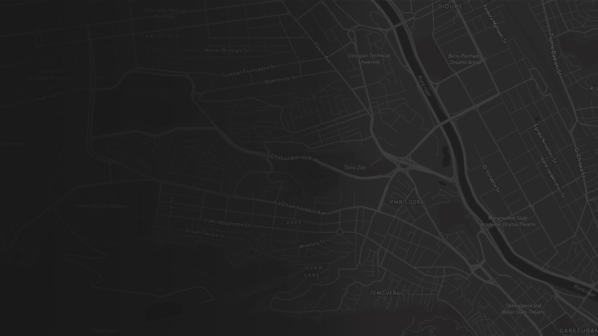

შენც, როგორც ყველას, გაქვს
ქალაქში საყვარელი გზა.
ამ
გზას
ირჩევ იმიტომ,
რომ ყველაზე მოკლეა,
ლამაზი ხე გხვდება,
რომელიღაც ფანჯრის რაფაზე კატაა წამოწოლილი
ან იმიტომ, რომ ამ გზაზე მზე ზუსტად სწორი კუთხით გეცემა ხოლმე.
თუმცა, დროსთან
ერთად
ეს გზა შეიძლება
შეიცვალოს.
ხე მოჭრან
კატა გაიქცეს
მზის სხივები კორპუსებმა გადაფაროს
ან ყველაფერი იგივე დარჩეს, მაგრამ გზაზე გადაგხდეს ამბავი, რომელიც მას გაუვალს გახდის.

×
ელენეს ისტორია